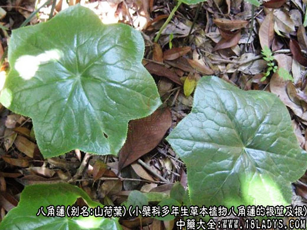
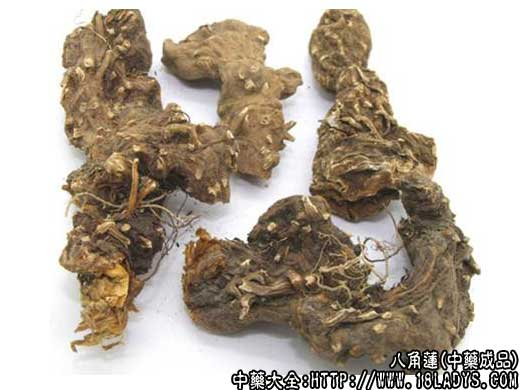
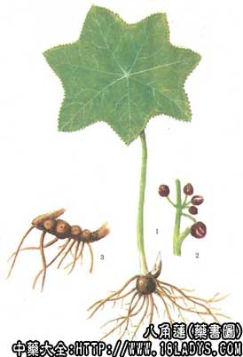

别名：山荷叶、独角莲、六角莲、鬼臼。
产地：分布我国南部、西南部及东南部，主产四川、广西、贵州等地。
采收加工：秋、冬采挖，洗净泥沙，晒干或鲜用。
性状：本品根茎呈结节状，长6～10厘米，直径0.7～1.5厘米，鲜时浅黄色，干后呈棕黑色；表面平坦或微凹，上有几个小的凹点，下面具环纹。须根多数，长达20厘米，径约1毫米，有毛，鲜时浅黄色，干后棕黄色。质硬而脆，易折断。根茎断面黄绿色，角质；根的断面黄色，中央有圆点状中柱。
性味：味苦、辛，性平。
归经：归肺经。
成分药理：含抗癌成分鬼臼毒素和脱氧鬼臼毒素。此外，尚分离出黄耆甙、金丝桃甙、槲皮素、山柰酚和8－谷甾醇。本品对离体蛙心有兴奋作用；对兔耳血管有扩张作用；对蛙后肢血管、家兔小肠，及肾血管有轻度收缩作用。全草中含树脂，能引起猫的吐、泻、死亡。
功效与作用：清热解毒，化痰散结，祛瘀消肿。
用量用法：6～12克，煎服，或研末服。外用：研末调敷、捣敷或浸酒涂敷。